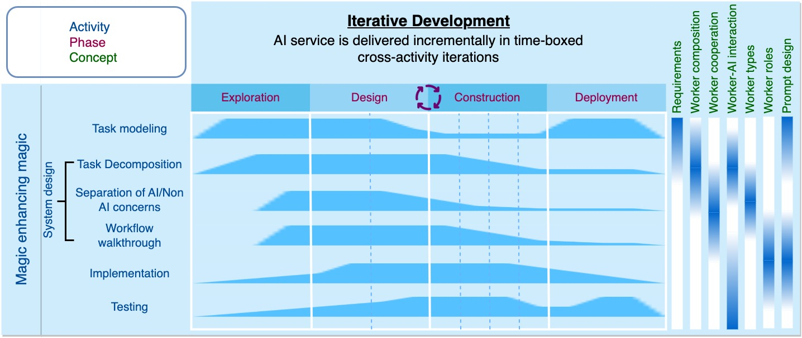

Magic Enhancing Magic
Promptmanship: process, concepts, activities, and patterns
This co-pilot activity leverages the capabilities of large language models to enhance AI chain engineering in multiple ways: acquiring task knowledge, requirement elicitation, and mechanical sympathy.
Acquiring task knowledge
The pre-training of LLMs uses Internet-scale data, which makes the resulting models neural knowledge bases (Cohen et al. 2023). People can chat with the LLM to obtain task-related knowledge, for example, how people generally solve the task step by step, what are key challenges in problem solving, what kind of information is required or produced, are there any special conditions/cases, what are common errors and how to recover from the errors, what tool supports are available and what are their limitations.
For example, to build WenXiaoJie (a long article writer), the engineer who consulted ChatGPT and learned that the major phases of writing a long article include: create a generic outline, personalize the outline, and iteratively expand, rewrite and polish the content. She also learned that the information required for these phases, for example, article theme, audience, subject matter for generic outline, favorite storyline for personalizing the outline. Furthermore, content consistency need to be continually checked during expansion and rewriting.
Such task-related knowledge serve as the foundation for AI chain analysis and design. Although chatting with the LLM is more convenient and efficient than obtaining relevant knowledge through Internet searches, it is important to be aware of the correctness of the knowledge recommended by the LLM. People can verify the model's output by asking it to explain its thought process (Reflection), list the relevant facts it knows (Verifier), and then combine it with their own knowledge to assess the validity of the model's response.
Requirement elicitation
Like other software projects, AI chain engineers often start with a vague understanding of ``what they want''. Building software on such vague statements is a major reason for the failure of software projects. We need to interact with engineers through requirement elicitation and gradually clarify vague ``what they want'' statements into specific AI chain needs. This challenging task can be supported by large language models, for example, through a Reverse Questioner worker. By providing some examples of requirement elicitation (such as good open-ended requirement elicitation questions in Software Requirements by Karl E. Wiegers), large language models would learn to ask good open-ended questions for specific tasks and thus elicit specific AI chain needs. The Design view of our Sapper IDE is equipped with such a requirement elicitation co-pilot that interacts with the engineer to elicit and analyze tasks requirements.
Mechanical sympthy
Mechanical Sympathy means that a racing driver does not need to be a mechanical engineer, but understanding how the car works can make one a better racing driver. The same applies to developing AI chains and writing prompts, especially as large language models are transforming AI from traditional design and engineering to something more akin to natural science. Therefore, we need to explore and understand emergent AI behaviors and capabilities.
Gwern Branwen's blog proposes that we need to anthropomorphize prompts. We need to consider how people would typically express the information we need if they had already discussed it on the Internet. Preliminary research (Gonen et al. 2022 suggests that the more familiar the model is with the language used in the prompt, the better the prompt's performance tends to be. We also need to test different prompts to see what different outputs they may lead to and reverse engineer how large language models understand these prompts, thereby discovering any discrepancies between what we assume/expect and what the models understand. Understanding these discrepancies can guide us in decomposing tasks and writing prompts to fit with the model capability.
Research has shown that large language models can create human-level prompts (Zhou et al. 2023), we can also rely on large language models to create or revise prompts. In fact, the Design view of our Sapper IDE uses the LLM to create candidate prompts when generating AI chain skeleton. During prompt debugging in the Block view, the engineer can also request the LLM to revise an existing prompt.